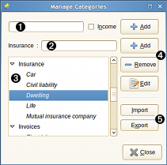

Categories dialog

The categories dialog is used to add, edit and manage the categories of the current wallet.
Dialog call
This dialog can be called in the following way:
- from the mainwindow-menu: Manage / Categories.
- from the mainwindow-toolbar.
Using category dialog
 Category name
Category name
type a new category name here and press return to add.
 Subcategory name
Subcategory name
- select the category to add subcategory to in the category list
- type a new subcategory name here and press return to add.
 Categories list
Categories list
display the category and subcategory, sorted alphabetically.
 Buttons
Buttons
 Buttons
Buttons